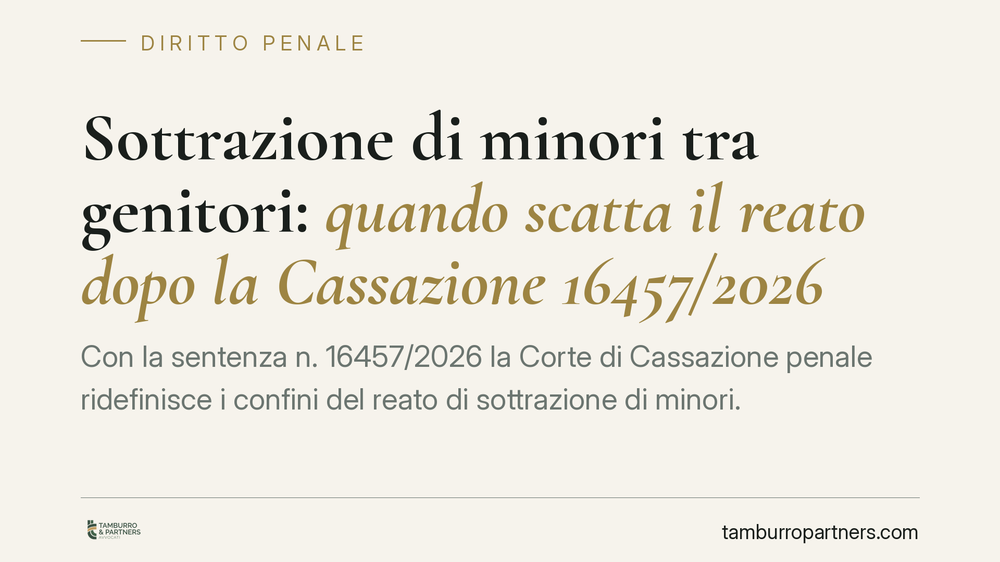

Sottrazione di minori tra genitori: quando scatta il reato dopo la Cassazione 16457/2026
Con la sentenza n. 16457/2026 la Corte di Cassazione penale ridefinisce i confini del reato di sottrazione di minori. Il fulcro non è più solo la violazione del potere dell'altro genitore, ma il pregiudizio concreto subito dal figlio. Una lettura che incide direttamente sui conflitti familiari e sulle condotte dei genitori separati, anche in assenza di affidamento esclusivo.

Il caso e il principio
La Corte di Cassazione penale, con la sentenza n. 16457/2026, interviene su una questione ricorrente nei procedimenti di famiglia: quando lo spostamento di un figlio da parte di un genitore integra il reato di sottrazione di minori.
Il principio affermato è netto. Il baricentro della tutela penale si sposta sull'interesse superiore del minore. Non basta accertare che un genitore abbia agito contro la volontà dell'altro: occorre verificare se dalla condotta sia derivato un pregiudizio concreto per il figlio. Un passaggio che ridimensiona la lettura più rigida, secondo cui ogni sottrazione al potere dell'altro genitore configurava di per sé il reato.
Inquadramento normativo
L'art. 574 del codice penale punisce chiunque sottragga un minore degli anni quattordici, o un maggiore di età infermo di mente, a chi ne esercita la responsabilità genitoriale o la tutela. La pena prevista è la reclusione da uno a tre anni.
La norma tutela, secondo l'impostazione tradizionale, il potere-dovere di custodia e cura riconosciuto al genitore o al tutore. La condotta rilevante è quella che sottrae il minore, allontanandolo dal luogo o dalla sfera di controllo di chi ne ha la responsabilità, con una durata apprezzabile.
La Cassazione, con la pronuncia in commento, non modifica il testo ma ne aggiorna l'interpretazione. Il bene giuridico protetto non è solo il potere dell'altro genitore: è l'equilibrio e lo sviluppo del minore. Ne deriva che la condotta deve essere valutata alla luce del danno effettivo, non presunto, arrecato al figlio. Questa lettura si colloca in linea con il principio dell'interesse superiore del minore, cardine dell'ordinamento di famiglia e delle fonti sovranazionali (in primis la Convenzione di New York sui diritti del fanciullo del 1989).
Perché questa lettura conta
Il punto più significativo riguarda l'affidamento. La Corte chiarisce che il reato può configurarsi anche in assenza di affidamento esclusivo. In un regime di affido condiviso, ciascun genitore esercita la responsabilità genitoriale: la condotta di uno può quindi ledere sia la posizione dell'altro sia, soprattutto, l'interesse del minore.
Allo stesso tempo, non ogni spostamento non concordato diventa automaticamente penalmente rilevante. Il giudice deve accertare in concreto il pregiudizio: interruzione dei rapporti con l'altro genitore, allontanamento dal contesto scolastico e sociale, compromissione della stabilità del minore. Manca questa verifica, manca un presupposto essenziale della fattispecie.
Implicazioni pratiche
Per il genitore separato o in via di separazione, la pronuncia ha effetti diretti.
Da un lato, chi trasferisce il figlio senza il consenso dell'altro genitore o senza autorizzazione del giudice espone la propria condotta a valutazione penale, anche in regime di affido condiviso. Un trasferimento di residenza deciso unilateralmente non è una scelta neutra.
Dall'altro, la valutazione non è più meccanica. La difesa può e deve dimostrare l'assenza di pregiudizio concreto per il minore, così come l'accusa deve provarlo. Il conflitto genitoriale, da solo, non basta a fondare la responsabilità penale.
È una prospettiva che invita a documentare ogni passaggio: accordi, comunicazioni, provvedimenti del tribunale. La ricostruzione delle condotte diventa decisiva sia in sede penale sia nel parallelo giudizio civile di famiglia.
Cosa fare in concreto
- Non trasferite il minore senza accordo scritto con l'altro genitore o senza autorizzazione del giudice, anche in caso di affido condiviso.
- Formalizzate ogni intesa su residenza, spostamenti e periodi di permanenza, evitando accordi solo verbali.
- Conservate le comunicazioni (messaggi, email, verbali) che documentano il consenso o il dissenso dell'altro genitore.
- Rivolgetevi tempestivamente al tribunale competente in caso di disaccordo, invece di procedere unilateralmente.
- Verificate la posizione con un legale prima di ogni decisione che incida sulla stabilità del figlio, valutando i profili sia penali sia di famiglia.
---
*Contributo informativo a cura di Tamburro & Partners - Avv. Giuseppe Tamburro. Non costituisce parere legale.*
Ogni condominio ha una storia a sé.
Se gestisci un'amministrazione e vuoi un confronto su una specifica questione condominiale, scrivi allo studio. Ti rispondiamo entro un giorno lavorativo.